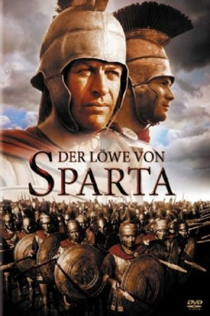

#4265 Der Löwe von Sparta
Alternativ: The 300 Spartans
 
 IMDB-Wertung: 6.7 / 10
IMDB-Wertung: 6.7 / 10  Metascore: 0
Metascore: 0 
Perserkönig Xerxes fällt in Griechenland ein. Er will das gesamte Land erobern um damit die Niederlage in der Schlacht von Marathon zu rächen. Der griechische Feldherr Themistokles bildet eine Allianz gegen die Perser und gibt Leonidas dem König von Sparta, das Kommando über die Streitkräfte. Der zieht mit seiner Leibgarde von nur 300 Mann in den Kampf.
Jahr: 1962
Dauer: 113 Minuten
FSK: 12
Land: USA Studio: Twentieth Century-Fox Film CorporationTonspuren:
Untertitel: Deutsch,
Auflösung: 1080p (1920x816) Größe: 8949 MB
Genre: Drama, Abenteuer, Krieg, Geschichte
Regisseur: Rudolph Maté
Drehbuch: Len Brown
Soundtrack:
Darsteller:
- Richard Egan als King Leonidas
 Ralph Richardson als Themistocles of Athens
Ralph Richardson als Themistocles of Athens Diane Baker als Ellas
Diane Baker als Ellas- Barry Coe als Phylon
- David Farrar als Xerxes
 Donald Houston als Hydarnes
Donald Houston als Hydarnes- Kieron Moore als Ephialtes
 John Crawford als Agathon the Spartan Spy
John Crawford als Agathon the Spartan Spy Robert Brown als Pentheus
Robert Brown als Pentheus Laurence Naismith als First Delegate
Laurence Naismith als First Delegate- Anna Synodinou als Gorgo
- Anne Wakefield als Artemisa
 Ivan Triesault als Demaratus
Ivan Triesault als Demaratus- Charles Fawcett als Megistias
- Michalis Nikolinakos als Myron
- Sandro Giglio als Xenathon
- Anna Raftopoulou als Toris
- Dimos Starenios als Samos
- Yorgos Moutsios als Demophilus of Thespiae
- Nikos Papakonstantinou als Grellas
- John G. Contes als Artovadus
- Marietta Flemotomos als Woman at Shield Ceremony
- Kostas Baladimas als Mardonius , uncredited
- Zannino als Athenian citizen , uncredited
Datei: X:\1962\Löwe von Sparta, Der (1962, FSK12, 1920x816).mkv seit 30.08.2016
Festplatte: HD 1900-1970
 Es gibt insgesamt 23 Filme in der Gruppe '1962'
Es gibt insgesamt 23 Filme in der Gruppe '1962'